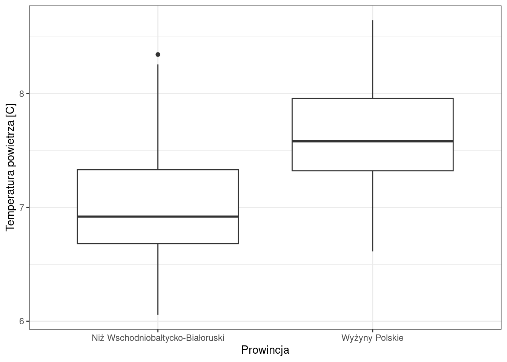
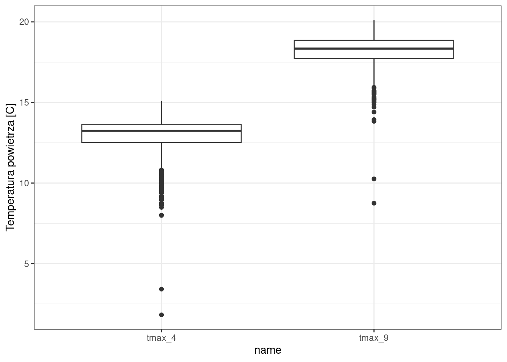

14 Testy parametryczne
14.1 Testy t-Studenta
Służą do wnioskowania o wartości średniej w populacji, z której pobraliśmy próbę losową.
Służą do porównania ze sobą dwóch grup
Można wyróżnić trzy rodzaje testów t-Studenta:
- dla prób niezależnych
- dla prób zależnych
- dla jednej próby
Założenia testów t-Studenta
- Zmienne powinny być ilościowe
- Rozkład danych w każdej z grup jest zbliżony do rozkładu normalnego
- Wartości w badanych grupach wykazują podobną wariancję (homogeniczność wariancji) - założenie klasycznego testu t-Studenta, nie testu Welcha (patrz uwaga poniżej)
- Obserwacje są od siebie niezależne (dla testu dla prób niezależnych)
Uwaga: domyślnym testem w R jest test Welcha. Funkcja t.test() ma argument var.equal = FALSE, więc domyślnie wykonuje test Welcha - odmianę testu t-Studenta, która nie wymaga równości wariancji w grupach. Dlatego w wyniku widzimy nagłówek Welch Two Sample t-test, a liczba stopni swobody nie jest liczbą całkowitą.
Klasyczny test t-Studenta, zakładający równość wariancji, otrzymamy, podając var.equal = TRUE:
t.test(annual_tavg ~ prowincja, data = pomiary_pol2, var.equal = TRUE)Ma to sens dopiero wtedy, gdy równość wariancji wcześniej sprawdzimy - służy do tego test F lub test Levene’a (patrz podrozdział Testowanie istotności różnic wariancji). W praktyce test Welcha jest bezpieczniejszym wyborem i dlatego jest w R domyślny.
Hipoteza statystyczna
Hipoteza zerowa: \(H_0 : \mu_1 = \mu_2\)
Hipotezy alternatywne:
- test jednostronny: \(H_A : \mu_1 > \mu_2\)
- test dwustronny: \(H_A : \mu_1 \neq \mu_2\)
14.1.1 Test t-Studenta dla prób niezależnych
- Dotyczy porównania ze sobą dwóch różnych grup obserwacji
- Próby muszą być od siebie niezależne (wyniki pomiaru jednej grupy nie zależą od wyników pomiaru drugiej grupy)
Przykład: Czy istnieją istotne różnice w średniej temperaturze (annual_tavg) między Niżem Wschodniobałtycko-Białoruskim, a Wyżynami Polskimi?
library(dplyr)
Attaching package: 'dplyr'The following objects are masked from 'package:stats':
filter, lagThe following objects are masked from 'package:base':
intersect, setdiff, setequal, unionpomiary_pol = read.csv("dane/pomiary_pol.csv")
pomiary_pol2 = filter(pomiary_pol,
prowincja %in%
c("Niż Wschodniobałtycko-Białoruski",
"Wyżyny Polskie"))
head(pomiary_pol2) pomiar_id tmin_4 tmax_4 tmin_9 tmax_9 annual_tavg annual_precip
1 2 4.122184 14.35588 9.214639 19.32696 8.144152 644.7503
2 8 2.656403 12.32077 8.042327 17.45611 6.614168 625.5083
3 20 3.528041 13.42039 8.415737 18.41839 7.387148 544.4395
4 22 3.636560 13.50256 8.553030 18.40303 7.309585 562.4307
5 24 4.297906 14.19705 9.064549 18.89787 7.654198 539.5709
6 29 2.769288 12.26086 8.207968 17.51594 6.660865 591.5201
prow_id woj_id prowincja wojewodztwo
1 6 13 Wyżyny Polskie świętokrzyskie
2 6 9 Wyżyny Polskie podkarpackie
3 6 3 Wyżyny Polskie lubelskie
4 6 3 Wyżyny Polskie lubelskie
5 6 3 Wyżyny Polskie lubelskie
6 5 10 Niż Wschodniobałtycko-Białoruski podlaskielibrary(ggplot2)
ggplot(pomiary_pol2, aes(x = prowincja, y = annual_tavg)) +
geom_boxplot() +
labs(x = "Prowincja", y = "Temperatura powietrza [C]") +
theme_bw()
Testowanie istotności różnic przy założeniu hipotezy dwustronnej tj. \(\mu_{Niż} \neq \mu_{Wyżyny}\)
t.test(annual_tavg ~ prowincja, data = pomiary_pol2)
Welch Two Sample t-test
data: annual_tavg by prowincja
t = -13.475, df = 338.76, p-value < 2.2e-16
alternative hypothesis: true difference in means between group Niż Wschodniobałtycko-Białoruski and group Wyżyny Polskie is not equal to 0
95 percent confidence interval:
-0.7378497 -0.5498738
sample estimates:
mean in group Niż Wschodniobałtycko-Białoruski
6.979376
mean in group Wyżyny Polskie
7.623238 14.1.2 Jak czytać wynik testu t-Studenta
Wydruk testu wygląda zawsze tak samo, niezależnie od danych. Warto raz nauczyć się, co oznacza każdy wiersz.
Welch Two Sample t-test <- (1) nazwa wykonanego testu
data: annual_tavg by prowincja <- (2) analizowane dane
t = -29.666, df = 338.07, p-value < 2.2e-16 <- (3) statystyka, stopnie swobody, p-value
alternative hypothesis: true difference in means <- (4) testowana hipoteza alternatywna
between group Niż ... and group Wyżyny ... is not equal to 0
95 percent confidence interval: <- (5) przedział ufności dla RÓŻNICY średnich
-0.6871 -0.6018
sample estimates: <- (6) średnie w porównywanych grupach
mean in group Niż ... mean in group Wyżyny ...
6.9790 7.6232- Nazwa testu - sprawdź, czy R wykonał ten test, który zamierzałeś. Welch oznacza wariant nie zakładający równości wariancji; Paired - test dla prób zależnych.
- Dane - która zmienna i według jakiej zmiennej grupującej.
- p-value - liczba, na podstawie której podejmujesz decyzję. Statystyka
ti stopnie swobodydfsą potrzebne przy opisie wyniku w raporcie. - Hipoteza alternatywna - co dokładnie było testowane oraz w jakiej kolejności R ustawił grupy (ważne przy testach jednostronnych).
- Przedział ufności - tu dla różnicy średnich. Jeśli zawiera zero, różnica nie jest istotna statystycznie. To ta sama informacja co p-value, podana w jednostkach zmiennej.
- sample estimates - średnie w grupach. Stąd odczytasz kierunek i wielkość różnicy; sam test mówi tylko, czy różnica istnieje.
Zapamiętaj: p-value mówi, czy różnica jest istotna statystycznie. O tym, czy jest istotna praktycznie, decyduje jej wielkość - a tę odczytasz z sekcji sample estimates i z przedziału ufności.
14.1.3 Jak wyciągnąć pojedynczą liczbę z wyniku
Wynik testu można zapisać do obiektu i wyjmować z niego potrzebne wartości - przydaje się to przy pisaniu raportów:
wynik <- t.test(annual_tavg ~ prowincja, data = pomiary_pol2)
wynik$p.value # sama wartość p[1] 1.961418e-33wynik$conf.int # przedział ufności dla różnicy[1] -0.7378497 -0.5498738
attr(,"conf.level")
[1] 0.95wynik$estimate # średnie w grupachmean in group Niż Wschodniobałtycko-Białoruski
6.979376
mean in group Wyżyny Polskie
7.623238 round(wynik$p.value, 4)[1] 014.1.4 Jak opisać wynik w raporcie
Do raportu nie wklejamy wydruku z R, tylko opisujemy wynik zdaniem zawierającym: nazwę testu, porównywane grupy, ich średnie, statystykę testową ze stopniami swobody oraz wartość p.
Test t-Studenta dla prób niezależnych wykazał istotną statystycznie różnicę w średniej rocznej temperaturze powietrza między Niżem Wschodniobałtycko-Białoruskim (M = 6,98 °C) a Wyżynami Polskimi (M = 7,62 °C); t(338,1) = -29,67; p < 0,001.
Interpretacja wyników
Poziom prawdopodobieństwa p (p-wartość) - jest to wyliczany w pakietach komputerowych najmniejszy poziom istotności, przy której wyliczona wartość testującej statystyki doprowadza do odrzucenia hipotezy zerowej.
Jeśli p-wartość jest poniżej założonego poziomu istotności (np. 0.05) tzn. że hipotezę zerową możemy odrzucić na rzecz hipotezy alternatywnej.
W powyższym przykładzie:
Hipoteza zerowa: prawdziwa różnica w średnich jest równa 0
Hipoteza alternatywna: Prawdziwa różnica w średnich nie jest równa 0.
P-wartość < 2.2e-16
- P-wartość jest mniejsza od 0.05 a zatem możemy odrzucić hipotezę zerową (różnica w średnich równa 0) na rzecz hipotezy alternatywnej (różnica w średnich różna od 0)
Pytanie: Czy średnia temperatura powietrza na Niżu i na Wyżynach różni się istotnie?
Odpowiedź: Średnia temperatura na Niżu i na Wyżynach różni się istotnie.
Przykład: Czy średnia temperatura (annual_tavg) Niżu Wschodniobałtycko-Białoruskiego jest istotnie wyższa od temperatury na Wyżynach Polskich?
Testowanie istotności różnic przy założeniu hipotezy jednostronnej tj. \(\mu_{Niż} > \mu_{Wyżyny}\)
Uwaga! Przy zapisie formułowym (annual_tavg ~ prowincja) R porównuje grupy w kolejności alfabetycznej nazw. Tutaj “Niż Wschodniobałtycko-Białoruski” poprzedza “Wyżyny Polskie”, więc pierwszą grupą jest Niż i alternative = "greater" oznacza hipotezę \(\mu_{Niż} > \mu_{Wyżyny}\). Przy innej parze prowincji kolejność może być odwrotna! Zawsze warto sprawdzić, która grupa jest pierwsza:
levels(factor(pomiary_pol2$prowincja))Kolejność można też odczytać z wiersza sample estimates w wyniku testu - tam średnie są wypisane w tej samej kolejności, w jakiej test je porównał.
t.test(annual_tavg ~ prowincja, data = pomiary_pol2,
alternative = "greater")
Welch Two Sample t-test
data: annual_tavg by prowincja
t = -13.475, df = 338.76, p-value = 1
alternative hypothesis: true difference in means between group Niż Wschodniobałtycko-Białoruski and group Wyżyny Polskie is greater than 0
95 percent confidence interval:
-0.7226726 Inf
sample estimates:
mean in group Niż Wschodniobałtycko-Białoruski
6.979376
mean in group Wyżyny Polskie
7.623238 Interpretacja: p-value wynosi 1, czyli nie ma żadnych podstaw do odrzucenia hipotezy zerowej w tym kierunku. Wynik ten nie oznacza, że grupy się nie różnią - oznacza, że różnica przebiega w kierunku przeciwnym do postawionej hipotezy alternatywnej. Widać to w wierszu sample estimates: średnia na Niżu wynosi 6,98 C, a na Wyżynach 7,62 C, więc Niż jest chłodniejszy. Wartość p blisko 1 w teście jednostronnym to typowy sygnał, że hipotezę postawiono w złą stronę - w kolejnym przykładzie sprawdzamy kierunek przeciwny.
Przykład: Czy średnia temperatura (annual_tavg) Niżu Wschodniobałtycko-Białoruskiego jest istotnie niższa od temperatury na Wyżynach Polskich?
Testowanie istotności różnic przy założeniu hipotezy jednostronnej tj. \(\mu_{Niż} < \mu_{Wyżyny}\)
t.test(annual_tavg ~ prowincja, data = pomiary_pol2,
alternative = "less")
Welch Two Sample t-test
data: annual_tavg by prowincja
t = -13.475, df = 338.76, p-value < 2.2e-16
alternative hypothesis: true difference in means between group Niż Wschodniobałtycko-Białoruski and group Wyżyny Polskie is less than 0
95 percent confidence interval:
-Inf -0.5650509
sample estimates:
mean in group Niż Wschodniobałtycko-Białoruski
6.979376
mean in group Wyżyny Polskie
7.623238 Interpretacja: p-value wynosi 9,8e-34, czyli znacznie mniej od przyjętego poziomu 0,05. Odrzucamy hipotezę zerową na rzecz alternatywnej: średnia temperatura roczna na Niżu Wschodniobałtycko-Białoruskim jest istotnie statystycznie niższa niż na Wyżynach Polskich. Zwróć uwagę, że to ten sam zestaw danych, co w poprzednim przykładzie - zmienił się tylko kierunek hipotezy alternatywnej, a wynik z nieistotnego stał się bardzo istotny.
Wczytaj dane z pliku dane/pomiary_pol.csv. Sprawdź czy średnia temperatura roczna (annual_tavg) na Wyżynach Polskich różni się od Masywu Czeskiego? Stwórz wykres porównujący tę zmienną dla tych prowincji. Określ czy różnica pomiędzy średnimi jest istotna statystycznie.
Rozwiązanie:
pomiary_pol = read.csv("dane/pomiary_pol.csv")
pomiary_pol2 = filter(pomiary_pol, prowincja %in% c("Masyw Czeski", "Wyżyny Polskie"))
ggplot(pomiary_pol2, aes(x = prowincja, y = annual_tavg)) +
geom_boxplot() +
labs(x = "Prowincja", y = "Temperatura powietrza [C]") +
theme_bw()
t.test(annual_tavg ~ prowincja, data = pomiary_pol2)Wczytaj dane z pliku dane/pomiary_pol.csv. Sprawdź czy średnia temperatura roczna (annual_tavg) Masywu Czeskiego jest większa od temperatury na Wyżynach Polskich?
Rozwiązanie:
pomiary_pol = read.csv("dane/pomiary_pol.csv")
pomiary_pol2 = filter(pomiary_pol, prowincja %in% c("Masyw Czeski", "Wyżyny Polskie"))
ggplot(pomiary_pol2, aes(x = prowincja, y = annual_tavg)) +
geom_boxplot() +
labs(x = "Prowincja", y = "Temperatura powietrza [C]") +
theme_bw()
t.test(annual_tavg ~ prowincja, data = pomiary_pol2,
alternative = "greater")14.1.5 Test t-Studenta dla prób zależnych
- Dotyczy porównania ze sobą tej samej grupy obserwacji
- Próby są zależne, czyli wynik pomiaru w drugim badaniu zależy od pierwszego (dotyczy tej samej obserwacji)
- Służy określeniu wielkości zmian pomiędzy pomiarami
library(dplyr)
library(tidyr)
library(ggplot2)
pomiary_pol = read.csv("dane/pomiary_pol.csv")
head(pomiary_pol) pomiar_id tmin_4 tmax_4 tmin_9 tmax_9 annual_tavg annual_precip
1 1 1.796358 12.04034 6.947685 17.84769 6.533702 864.6408
2 2 4.122184 14.35588 9.214639 19.32696 8.144152 644.7503
3 3 3.750375 12.58249 9.513398 17.76400 7.831449 613.0326
4 4 3.645718 12.19533 9.743287 17.69533 7.851240 638.0846
5 5 2.788949 12.58895 7.988949 17.78588 7.296935 546.1904
6 6 4.129882 14.12988 9.300000 19.10000 8.200000 555.2842
prow_id woj_id prowincja
1 2 6 Karpaty Zachodnie z Podkarpaciem Zachodnim i Północnym
2 6 13 Wyżyny Polskie
3 4 16 Niż Środkowoeuropejski
4 4 16 Niż Środkowoeuropejski
5 4 3 Niż Środkowoeuropejski
6 2 9 Karpaty Zachodnie z Podkarpaciem Zachodnim i Północnym
wojewodztwo
1 małopolskie
2 świętokrzyskie
3 zachodniopomorskie
4 zachodniopomorskie
5 lubelskie
6 podkarpackiePrzykład: Czy maksymalna temperatura kwietnia (tmax_4) oraz września (tmax_9) różni się istotnie?
#Wykonanie wykresu pudelkowego wymaga zamiany danych na format dlugi
pomiary_pol_l <- pomiary_pol |>
select(pomiar_id, tmax_4, tmax_9) |>
pivot_longer(contains("tmax"))
ggplot(pomiary_pol_l, aes(name, value)) +
geom_boxplot() +
labs(y = "Temperatura powietrza [C]") +
theme_bw()
Test t-Studenta dla prób zależnych, jeśli dane są w formacie szerokim.
t.test(pomiary_pol$tmax_4, pomiary_pol$tmax_9, paired = TRUE)
Paired t-test
data: pomiary_pol$tmax_4 and pomiary_pol$tmax_9
t = -528.83, df = 1494, p-value < 2.2e-16
alternative hypothesis: true mean difference is not equal to 0
95 percent confidence interval:
-5.267092 -5.228163
sample estimates:
mean difference
-5.247628 Interpretacja: średnia różnica (tmax_4 - tmax_9) wynosi -5,25 C, a p-value jest mniejsze od 2,2e-16. Odrzucamy hipotezę zerową: maksymalna temperatura kwietnia różni się istotnie statystycznie od maksymalnej temperatury września, przy czym kwiecień jest chłodniejszy. Znak średniej różnicy wskazuje kierunek - sam test dwustronny mówi tylko, że różnica istnieje.
Wczytaj dane z pliku dane/pomiary_pol.csv. Wykonaj test dla określenia czy maksymalna temperatura powietrza w kwietniu (tmax_4) jest niższa od maksymalnej temperatury września (tmax_9). Sformułuj hipotezę zerową oraz hipotezę alternatywną oraz zinterpretuj wynik testu.
Rozwiązanie:
pomiary_pol = read.csv("dane/pomiary_pol.csv")
t.test(pomiary_pol$tmax_4, pomiary_pol$tmax_9, paired = TRUE, alternative = "less")14.1.6 Zadanie: znajdź błąd
Badacz chciał sprawdzić, czy maksymalna temperatura powietrza w kwietniu różni się od maksymalnej temperatury we wrześniu. Dysponował pomiarami z 1500 stacji - dla każdej stacji miał obie wartości. Wykonał test:
t.test(pomiary_pol$tmax_4, pomiary_pol$tmax_9). Co zrobił źle i jaki będzie skutek tego błędu?
Badacz zastosował test dla prób niezależnych, podczas gdy obie wartości pochodzą z tej samej stacji - próby są sparowane. Powinien dodać argument paired = TRUE.
Skutek: test dla prób niezależnych nie wykorzystuje informacji o powiązaniu obserwacji. Zmienność między stacjami (jedne są ogólnie cieplejsze, inne chłodniejsze) trafia wtedy do oszacowania błędu, zamiast zostać wyłączona z analizy. Test ma przez to mniejszą moc - przy mniejszej różnicy mógłby jej w ogóle nie wykryć.
14.2 Testowanie istotności różnic wariancji
- Pozwala na porównywanie wariancji w dwóch grupach pomiarów
- Zakłada rozkład normalny w obu grupach
- Test ten może być jednostronny lub dwustronny
- Dla wielu wariancji używany jest test Levene’a
pomiary_pol = read.csv("dane/pomiary_pol.csv")
pomiary_pol2 = subset(pomiary_pol,
prowincja %in%
c("Niż Wschodniobałtycko-Białoruski",
"Wyżyny Polskie"))var.test(annual_tavg ~ prowincja, data = pomiary_pol2)
F test to compare two variances
data: annual_tavg by prowincja
F = 0.8629, num df = 161, denom df = 178, p-value = 0.3405
alternative hypothesis: true ratio of variances is not equal to 1
95 percent confidence interval:
0.6384037 1.1690499
sample estimates:
ratio of variances
0.8628984 Interpretacja:
- Wartość p-value dla testu F p = 0.3405 jest większa od założonego poziomu istotności (0.05). Nie ma istotnych różnic między wariancją dla obu grup (Niżu oraz Wyżyn).
14.2.1 Test Levene’a
- Porównywane grupy w testach parametrycznych powinny mieć podobne wariancje
- Do weryfikacji czy zachowana jest homogeniczność wariancji w grupach stosuje się, między innymi, test Levene’a
- \(H_0\) - wariancje są takie same
- \(H_A\) - wariancje się różnią
pomiary_pol = read.csv("dane/pomiary_pol.csv")
pomiary_pol2 = subset(pomiary_pol,
prowincja %in%
c("Niż Wschodniobałtycko-Białoruski",
"Wyżyny Polskie"))library(car)
leveneTest(annual_tavg ~ factor(prowincja), data = pomiary_pol2)Levene's Test for Homogeneity of Variance (center = median)
Df F value Pr(>F)
group 1 1.2277 0.2686
339 Interpretacja: p-value wynosi 0,2686, czyli jest większe od 0,05. Nie ma podstaw do odrzucenia hipotezy zerowej o równości wariancji - założenie homogeniczności wariancji w obu prowincjach można uznać za spełnione. Wynik jest zgodny z wcześniejszym testem F (p = 0,3405), co jest typowe: oba testy odpowiadają na to samo pytanie, ale test Levene’a jest mniej wrażliwy na odstępstwa od normalności i nadaje się także dla więcej niż dwóch grup.